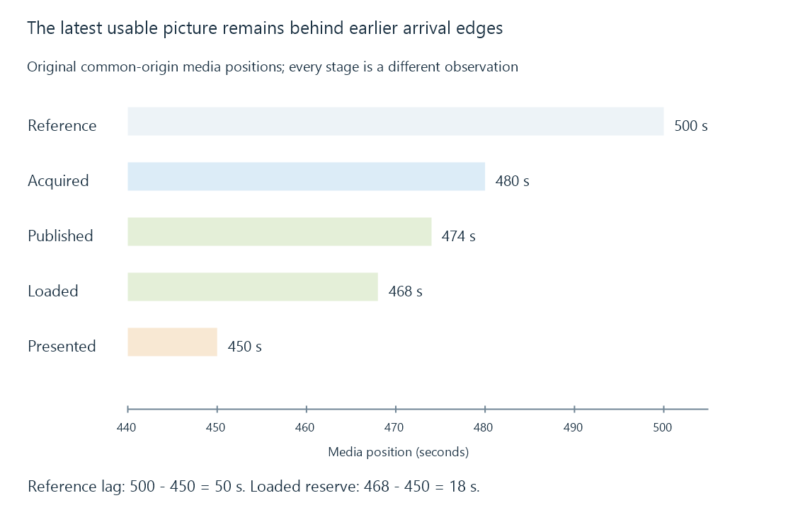

The live playback edge and delivery delay
The live playback edge is the newest usable position in a particular delivery path, which remains behind acquisition and publication stages and can require additional playback margin.
“Go live” moves playback toward the newest position the current route can use. It does not move the viewer to the physical event before its media has been acquired, prepared and delivered.
There are several edges, depending on which stage is observed.
Name the edge being compared
Use this original common-origin snapshot:
| Stage | Latest usable media position |
|---|---|
| Event/source reference | 500 s |
| Acquired source media | 480 s |
| Server’s published media | 474 s |
| Client’s loaded usable media | 468 s |
| Currently presented | 450 s |
The viewer is fifty seconds behind the reference. Eighteen seconds of loaded media lie ahead of its presentation.

The eighteen-second client reserve is not the entire fifty-second delay. Earlier stages account for another thirty-two seconds before the client’s latest loaded position.
A guide’s “now” label describes its schedule/clock interpretation; it does not measure these media positions.
A published edge advances in usable pieces
In a segmented route, a completed segment can become available after the source has already produced part of the next one. The latest published endpoint consequently advances in steps.
Here is an original HLS live playlist, with the first segment declared to start at media time 324:
#EXTM3U
#EXT-X-VERSION:3
#EXT-X-TARGETDURATION:6
#EXT-X-MEDIA-SEQUENCE:54
#EXTINF:6,
segment-54.ts
#EXTINF:6,
segment-55.ts
#EXTINF:6,
segment-56.ts
#EXTINF:6,
segment-57.ts
#EXTINF:6,
segment-58.ts
#EXTINF:6,
segment-59.ts
Its six segments span thirty-six seconds, ending at 360. The sequence number identifies the first listed segment; it does not by itself give a wall-clock time. The URIs are fictional relative references.
No ENDLIST marker declares a final endpoint. The client expects updates rather than treating 360 as the completed programme duration.
Starting at the newest segment gives little reserve
RFC 8216 recommends that ordinary live playback without another instructed start should not choose a segment starting less than three target durations from the playlist end.
In this six-second-target example, that margin is eighteen seconds. A start at 342 meets it; the newest segment begins at 354 and leaves only six seconds of listed media.
The extra margin helps absorb publication and delivery variation. Choosing a very recent start can reduce delay while increasing the risk of reaching data that has not been published yet.
This is the conventional HLS recommendation being illustrated. Other protocols and explicitly designed low-latency paths have their own timing rules.
Seeking and catching up move differently
A seek near the usable edge skips intervening programme content. Faster playback can reduce the gap while still presenting that content.
For an original gap of thirty seconds, assume the edge advances at normal speed and playback runs at 1.25 times that speed. The gap shrinks at 0.25 seconds per wall second, so catching it takes 120 seconds if the conditions remain unchanged.
Normal-speed playback retains the gap. Pausing increases it.
A player must settle into an appropriate live rate or margin after catching up. Chase playback develops the corresponding case where the advancing endpoint belongs to an ongoing retained recording.
See Also
- What is live TV?
- Time-shift buffers and the retained live window
- Buffering, ready media and playback reserve
- HTTP Live Streaming (HLS)